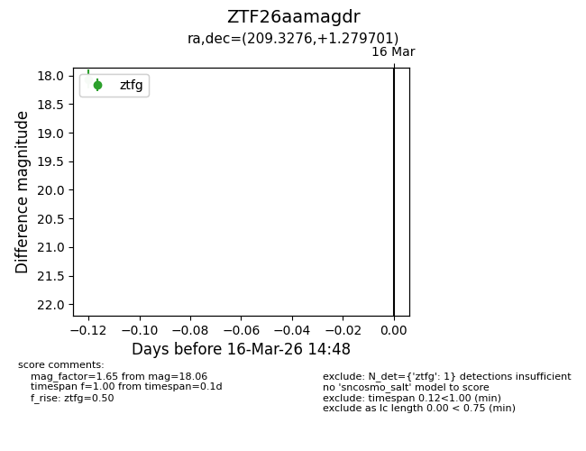
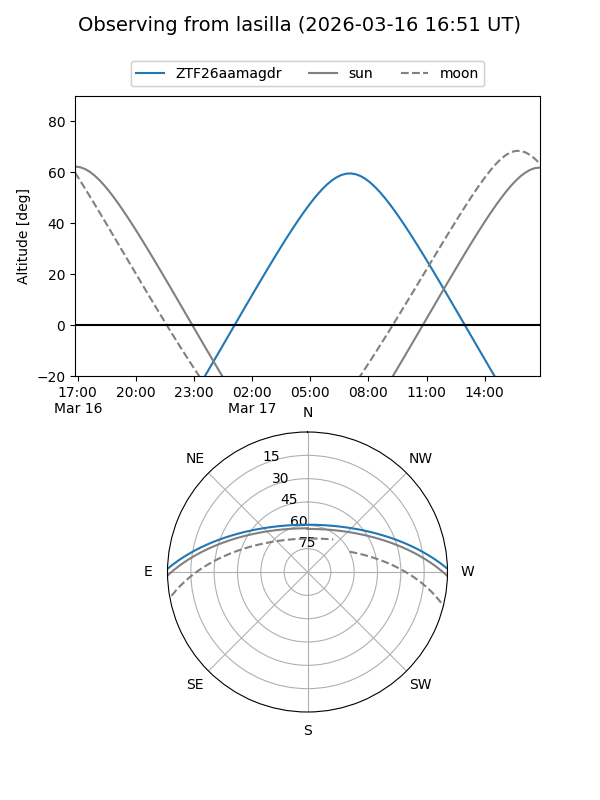
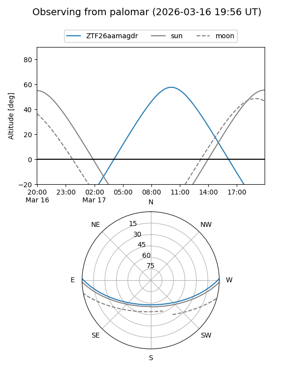

ZTF26aamagdr
Target ZTF26aamagdr at 2026-03-16 14:50
Aliases and brokers:
FINK: link
Lasair: link
ALeRCE: link
alt names
ZTF26aamagdr (ztf,fink_ztf)
Coordinates:
equatorial (ra, dec) = 209.3276,+1.27970
equatorial (HMS+DMS) = 13:57:18.63,+01:16:46.92
galactic (l, b) = (337.1150,+59.70610)
Flags:
Photometry:
last ztfg=18.06
1 ztfg detections
Lightcurve

Visibility


Additional plots